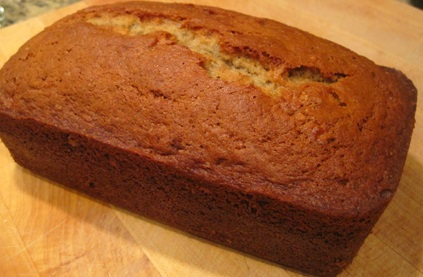

We have many recipes which we could share with each other. More will be added when I have time later.
Home Made Sausage
Ingredients
Pork 5000 g
75 g pepper noodles
pepper 75 grams
125 grams of salt
sugar, 50 grams
50 grams of liquor
a small amount of allspice
pepper and a small amount
a small amount of chicken sausage
clean cotton or thin rope
Steps
pork (fat and lean proportion is 3: 7) cut meat, meat treaty 1 cm wide and 3 cm long.
all the spices into the meat strips cut, mix, marinated 12-24 hours.
be bought casings cleaned, sausage is not very good cleaning, the cleaning time will be better to add some baking soda to clean some good will wash dry sausage stand.
if there is the best, no special tools sausage filling, then find a large Coke bottle, cut from 1/3, the upper part of the Coke bottle can serve as a tool for sausage filling.

Banana Bread
Ingredients
1/2 cup butter, softened
1 cup light brown sugar
1 3/4 cups flour
1 teaspoon baking powder
1/2 teaspoon salt
2 cups mashed bananas
2 eggs, beaten
3/4 cup macadamia nuts
Steps
Preheat oven to 350ยบ.
Grease and flour a loaf pan.
In a bowl, mix butter and sugar until creamy.
In a separate bowl combine flour, baking powder and salt.
Blend dry ingredients with creamed butter/sugar mixture.
Add mashed bananas, eggs and nuts.
Pour into loaf pan. Bake for 1 hour or until a knife comes out clean.